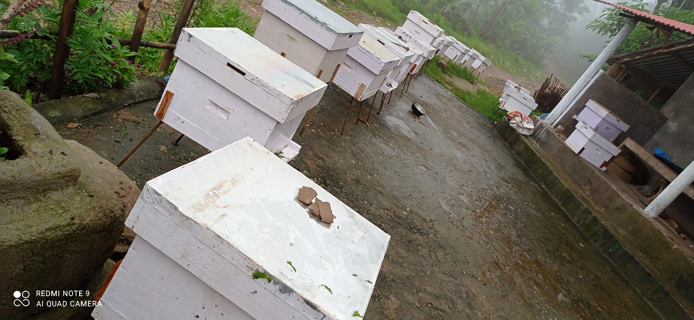
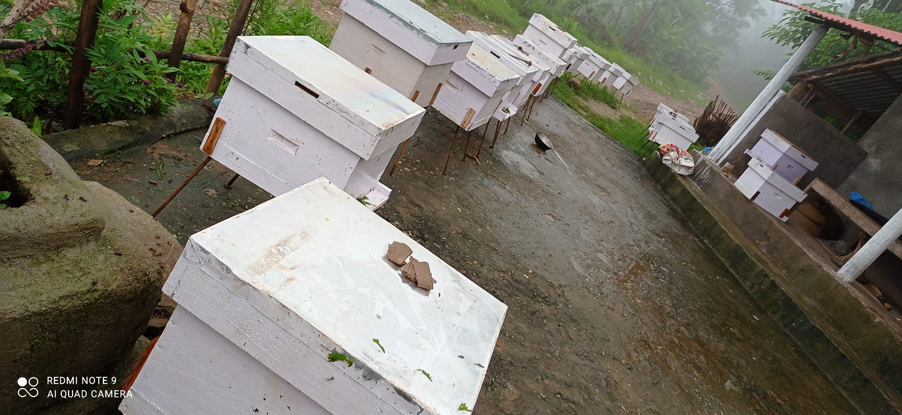
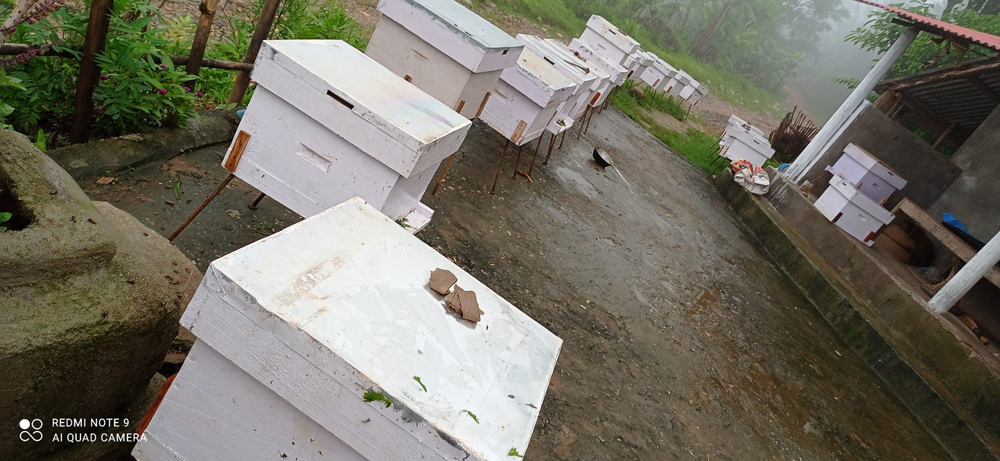

केही झलकहरू

 

स्वस्थ जीवनका लागि शुद्ध स्वाद
१००% शुद्ध, जैविक, स्थानीय मह तथा मौरी सम्बन्धी सम्पूर्ण सामाग्रीहरु सुपथ मूल्यमा पाइन्छ।
हाम्रो मौरी तथा मह उद्योगमा महलगायत मौरीपालनका लागि आवश्यक सम्पूर्ण सामग्री तथा सुविधा उपलब्ध छन्। हामीसँग उच्च गुणस्तरका मौरीका घार (हाइव), मौरी राख्ने बक्सहरू, फ्रेमहरू, प्रोटेक्टिभ कपडा (जस्तै– मौरीपालकको लुगा, टोपी र जाली), स्मोकर, हाइव टुल्स, मह निकाल्ने एक्स्ट्र्याक्टर, घार सफा गर्ने उपकरणहरू, साथै मह संकलन, प्रशोधन र प्याकेजिङ्गका सम्पूर्ण साधनहरू छन्।
नयाँ तथा अनुभवी मौरीपालकहरूको लागि तालिम, प्राविधिक सल्लाह, आवश्यक उपकरणहरू, र बजार व्यवस्थापनसमेत हामीले प्रदान गर्दै आएका छौं।
हाम्रो उद्देश्य मौरीपालनलाई वैज्ञानिक, दिगो, सुरक्षित र उत्पादनमूलक बनाउनु हो, जसले कृषक तथा उद्यमीहरूलाई आत्मनिर्भर बनाउने दिशामा ठोस योगदान दिन सक्छ।
हामीसँग सिधा सम्पर्क गरेर वा WhatsApp / Facebook मार्फत अर्डर गर्न सकिन्छ। अर्डरको लागि फोन गर्नुहोस् वा सन्देश पठाउनुहोस्:
फोन:९८४३०८३२२१
फेसबुक पूर्ण प्रसाद सिम्खडा

स्वस्थ जीवनका लागि शुद्ध स्वाद